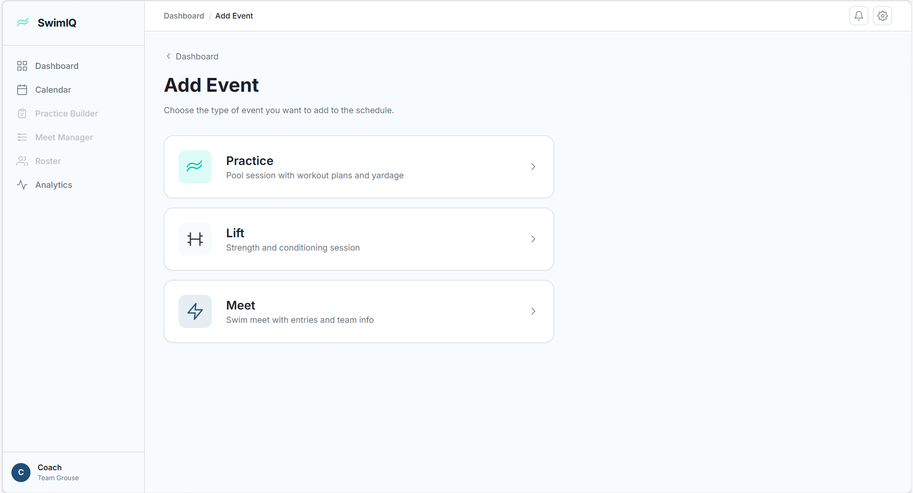
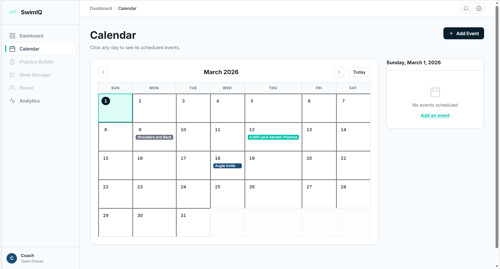

What is SwimIQ?
SwimIQ is a web application built for swim coaches who want a single, organized place to plan practices, schedule lifting sessions, coordinate meets, and track swimmer performance over time. Instead of juggling spreadsheets, text messages, and paper notebooks, a coach can open SwimIQ, see everything coming up this week, add a new event in seconds, and pull up analytics to see how their team is trending. The current version is a full-stack application: a React single-page app for the front end and a Python FastAPI service for the data and analytics back end.
Feature: Coach Dashboard
The dashboard is specific for a coach and contains only the information they need to see right now about upcoming events. As well as a high-level calendar overview, it has three main components:
- Upcoming Events widget — shows the next seven scheduled events (practices, lifts, and meets), sorted by date. Each row is clickable and takes the coach directly to the edit form for that event.
- Mini-Calendar — a compact monthly calendar in the sidebar that highlights days with scheduled events. Clicking any highlighted day navigates directly to the full calendar view filtered to that date.
- Quick Actions — one-click shortcuts for the most common tasks (adding a practice, a lift, or a meet), so coaches never have to hunt through menus.
The layout uses a persistent left sidebar for global navigation and a sticky top bar that maintains context for the current page. The sidebar stays fixed while the main content area scrolls independently.

Feature: Add Event
Clicking “Add Event” opens a type-selection screen with three options. Each option routes to a purpose-built form.
Practice
The practice form lets a coach set a date and time, write a description, and build a multi-group workout plan. A coach can select from pre-loaded workout presets (stored in application state) or write custom sets for each group. Each group block can be added or removed dynamically.
Lift (Strength Training)
The lift form mirrors the practice form but is tailored for dryland and weight-room sessions. It includes lift-specific preset plans and the same flexible group-block structure, so a coach can write different workouts for different training groups in one session.
Meet
The meet form handles swim competition scheduling. Coaches enter a date, a meet name, and opposing teams (added as removable tags). A free-text “meet entries” field holds heat sheet or event entry notes, and a general notes section rounds out the form.
Every form doubles as an edit form: navigating to
/add-event/practice/:id (or the equivalent for
lift/meet) pre-fills all fields from the saved event. This is wired
through the global EventsContext which is accessible
anywhere in the React tree.
Feature: Full Calendar
The /calendar route renders a standard monthly grid
with navigation arrows for month-to-month browsing and a
“Today” shortcut button. Scheduled events appear as
color-coded pills inside each day cell (teal for practices, orange
for lifts, red for meets), with a “+X more” overflow
count when a day has more than three events.
Clicking a day opens a detail panel to the right of the grid that
lists every event for that day. Each event in the panel is a button
that navigates to the corresponding edit form. The selected date is
persisted in the URL as a ?date=YYYY-MM-DD query
parameter, so navigating back from an edit form returns to the same
day view without any extra state management.

Feature: Analytics API
The back end is a Python FastAPI service that exposes a REST API for swim performance analytics. Built on pandas, NumPy, SciPy, and statsmodels, it supports:
- Importing swimmer time data from a flat CSV structure
- Searching by swimmer name or school across a dataset
- Multi-swimmer comparison across different teams
- Time-series trend analysis and predictive modeling using an ARIMA model — so coaches can see projected future performance based on historical results
The analytics endpoints are designed to be consumed by the React front end. The next phase of the project will wire the prediction output into the dashboard and individual swimmer profile pages.
Under the Hood
We chose React 19 paired with Vite 8 (currently in beta) for the front end because the combination offers near-instant hot module replacement and a fast build pipeline. The app uses the React Context API for global event state — a lightweight choice that avoids Redux overhead while the data model is still stabilizing. Styling is plain CSS with custom properties (design tokens) organized around an “Aquatic Minimal” theme: a deep navy primary color, a bright teal accent, and clean white card surfaces.
On the back end, FastAPI gives us automatic OpenAPI documentation and fast async request handling with minimal boilerplate. The Python scientific stack (pandas, NumPy, SciPy, statsmodels) handles all the data wrangling and statistical modeling without pulling in a heavier ML framework.
What’s Next
The immediate priorities for the coming weeks are:
-
Firebase integration — replacing the
in-memory
EventsContextwith a Firestore-backed data layer so events persist across sessions and can be shared across devices. - Swimmer profiles and analytics UI — building the front-end pages that consume the Python analytics API, including trend charts and ARIMA predictions.
- Authentication — adding Firebase Authentication so coaches can have private, team-specific data.
- Roster management — a page for adding and managing swimmer profiles linked to event attendance and performance records.
Check back here each week as we ship these features.